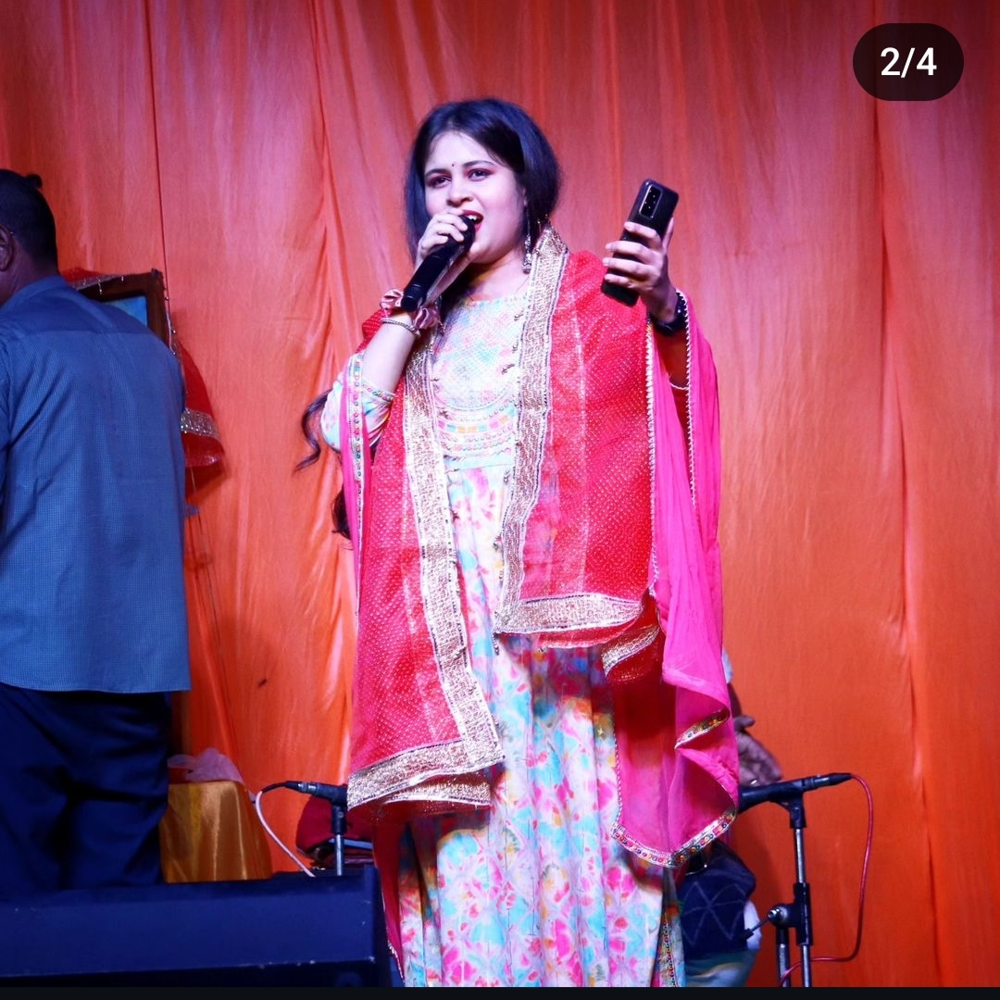

Heyy! Kurnika Kesa laga ye?
U can rotate by dragging it
U can also zoom it
कुछ इस तरह से वो मुस्कुराते हैं ,
कि परेशान लोग उन्हें देख कर खुश हो जाते हैं ,
उनकी बातों का अजी क्या कहिये,
अल्फ़ाज़ फूल बनकर होंठों से निकल आते हैं!
Heyy! Kurnika Kesa laga ye?